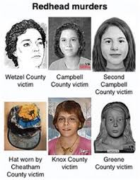
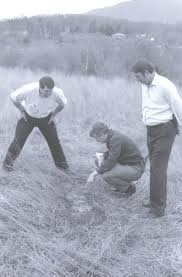
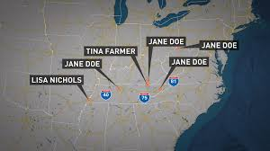

REDHEAD MURDERS

The Redhead murders refers to a series of unsolved homicides of redheaded females between October 1978 and 1992, believed to have been committed by an unidentified male serial killer. The murders believed to be related have occurred in states including Tennessee, Arkansas, Kentucky, Mississippi, Pennsylvania, and West Virginia.The murders may have continued until 1992.The victims, many of whom have never been identified, were usually women with reddish hair, whose bodies were abandoned along major highways in the United States. Officials believe that the women were likely hitchhiking or may have engaged in prostitution.Authorities are unsure how many people were responsible for these murders, if they were all performed by the same perpetrator(s), and how many victims there have been.It is believed that there may have been a total of six to eleven victims Of the presumed victims, four were identified by November 2018.The suspect was informally called the Bible Belt Strangler in 2018, because of the territory where the bodies were found.
It is believed that most of the victims remain unidentified due to being estranged or not close with existing family members. They also may not have been native to the states in which they were found. In 1985, not long after the Greene County victim was found, the states of Pennsylvania, Tennessee, Arkansas and Mississippi requested the Federal Bureau of Investigation for assistance with the cases. There were inconsistencies among some of the victims and characteristics of the crime scenes, as some were found with or without clothing, and some had a sexual encounter before their murders.During the conference, it was stated that four victims found in Texas and a victim found in 1981 in Ohio, nicknamed "Buckskin Girl” (later identified as Marcia King), were ruled out in 1985 as possible victims in the Redhead murders.

A possible suspect emerged circa 1985, when a 37-year-old trucker, Jerry Leon Johns, attacked and attempted to strangle a woman with reddish hair. He left the victim lying near a highway, presuming she was dead. He was later dismissed in the Redhead murders case but was convicted of the woman's kidnapping in 1987.Despite his exclusion from the case, it was announced that DNA from Johns was matched to Tina Farmer via CODIS in 2016. He died in prison in 2015 at the age of 67. A grand jury decided he would have been indicted for the slaying, had he been alive. Johns was a trucker who resided in Cleveland, Tennessee before his arrest.It has not been specified whether he is considered a suspect in other victims of the Redhead murders.

Another suspect was a 32-year-old trucker in Pennsylvania, who was questioned after kidnapping and raping a young woman in the state of Indiana. She managed to escape before more injury. This suspect was also dismissed from this investigation, after being questioned by Tennessee police.In 2018, students enrolled in a sociology class at Elizabethton High School studied the case with the aid of their instructor. The class coined the name "Bible Belt Strangler."The class developed the information from an FBI profiler. They described the subject as a white male born between 1936 and 1962 (aged between 23 and 49 in 1985) who was likely a commercial trucker frequenting Interstate 40. They estimated his height and weight to be 5'9"-6'2" and 180-270 pounds. His work was likely based in or near the city of Knoxville, Tennessee.
Some questions will never be answered ever...(MindHunting Questions)
1. Why did the killer target only women with red hairs??
2. What kind of experiences did he have in his life which turned him like this??
3. Does redhead murderer still exists??